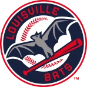

FBL · RP
Jason Grimsley
- Team
 Louisville Bats
Louisville Bats- Position
- RP
- Bats/Throws
- R/R
- Height/Weight
- 6'3", 180 lb
- Born
- Aug 7, 1967 in Cleveland, OH
- Age
- 34
- Uniform
- #38
- Salary
- $550,000
2002 pitching
| Team | Lg | G | GS | W | L | SV | IP | H | R | ER | BB | K | HR | ERA | WHIP | HLD | BS | QS | CG | SHO |
|---|---|---|---|---|---|---|---|---|---|---|---|---|---|---|---|---|---|---|---|---|
| LoBa | FBL | 12 | 0 | 1 | 0 | 2 | 17.0 | 24 | 11 | 7 | 7 | 10 | 0 | 3.71 | 1.82 | 3 | 3 | 0 | 0 | 0 |
2002 pitching, advanced
| Team | Lg | BF | Pit | Pit/IP | Opp AVG | BABIP | HBP | WP | IR | IR scored | K/9 | BB/9 | HR/9 | K% | BB% | K-BB% | FIP | ERA+ | GB% | WPA | WAR |
|---|---|---|---|---|---|---|---|---|---|---|---|---|---|---|---|---|---|---|---|---|---|
| LoBa | FBL | 83 | 288 | 16.9 | .324 | .369 | 1 | 1 | 10 | 6 (60.0%) | 5.3 | 3.7 | 0.0 | 12.0% | 8.4% | 3.6% | 3.53 | 125 | 72.5% | -0.45 | 0.3 |
Pitching splits
| Split | G | GS | W | L | SV | IP | H | R | ER | BB | K | HR | ERA | WHIP | Opp AVG | K/9 | BB/9 | HR/9 | FIP |
|---|---|---|---|---|---|---|---|---|---|---|---|---|---|---|---|---|---|---|---|
| Home | 8 | 0 | 1 | 0 | 1 | 13.0 | 15 | 7 | 5 | 7 | 8 | 0 | 3.46 | 1.69 | .283 | 5.5 | 4.8 | 0.0 | 3.91 |
| Road | 4 | 0 | 0 | 0 | 1 | 4.0 | 9 | 4 | 2 | 0 | 2 | 0 | 4.50 | 2.25 | .429 | 4.5 | 0.0 | 0.0 | 2.30 |
By month
| Month | G | GS | W | L | SV | IP | H | R | ER | BB | K | HR | ERA | WHIP | Opp AVG | K/9 | BB/9 | HR/9 | FIP |
|---|---|---|---|---|---|---|---|---|---|---|---|---|---|---|---|---|---|---|---|
| April | 8 | 0 | 1 | 0 | 0 | 12.1 | 15 | 6 | 3 | 5 | 8 | 0 | 2.19 | 1.62 | .288 | 5.8 | 3.6 | 0.0 | 3.46 |
| May | 4 | 0 | 0 | 0 | 2 | 4.2 | 9 | 5 | 4 | 2 | 2 | 0 | 7.71 | 2.36 | .409 | 3.9 | 3.9 | 0.0 | 3.73 |
vs left- and right-handed batters
| Split | BF | AB | H | HR | BB | K | Opp AVG | Opp OBP | Opp SLG | K% | BB% |
|---|---|---|---|---|---|---|---|---|---|---|---|
| vs LHB | 36 | 32 | 7 | 0 | 4 | 7 | .219 | .306 | .312 | 19.4% | 11.1% |
| vs RHB | 47 | 42 | 17 | 0 | 3 | 3 | .405 | .447 | .500 | 6.4% | 6.4% |
Opponents by situation
| Situation | PA | AB | H | 2B | 3B | HR | RBI | BB | K | AVG | OBP | SLG | OPS |
|---|---|---|---|---|---|---|---|---|---|---|---|---|---|
| Bases empty | 28 | 24 | 10 | 2 | 1 | 0 | 0 | 3 | 0 | .417 | .500 | .583 | 1.083 |
| Runners on | 55 | 50 | 14 | 3 | 0 | 0 | 14 | 4 | 10 | .280 | .327 | .340 | .667 |
| Runners in scoring position | 38 | 33 | 12 | 2 | 0 | 0 | 14 | 4 | 4 | .364 | .421 | .424 | .845 |
| RISP, two outs | 24 | 20 | 9 | 1 | 0 | 0 | 10 | 4 | 2 | .450 | .542 | .500 | 1.042 |
| Innings 7-9 | 81 | 72 | 23 | 5 | 1 | 0 | 14 | 7 | 9 | .319 | .383 | .417 | .799 |
| Extra innings | 2 | 2 | 1 | 0 | 0 | 0 | 0 | 0 | 1 | .500 | .500 | .500 | 1.000 |
Situational splits are rebuilt from every plate appearance in the export (base/out state when the PA began). "RBI" counts runs batted in on that PA.
2002 pitching game log
| Date | Opp | Score | Dec | IP | H | R | ER | BB | K | HR | BF | PC | GB | FB | QS | WPA | |
|---|---|---|---|---|---|---|---|---|---|---|---|---|---|---|---|---|---|
| May 12 | @ORLJ | W 9-4 | S | 1.2 | 2 | 0 | 0 | 0 | 0 | 0 | 7 | 19 | 3 | 2 | 0.068 | ||
| May 8 | vsRiFS | W 11-9 | H | 1.1 | 3 | 3 | 3 | 1 | 0 | 0 | 8 | 31 | 2 | 2 | 0.013 | ||
| May 3 | vsHONO | W 7-6 | BS | 0.1 | 3 | 2 | 1 | 1 | 1 | 0 | 5 | 26 | 0 | 0 | -0.361 | ||
| May 1 | vsHONO | W 7-4 | S | 1.1 | 1 | 0 | 0 | 0 | 1 | 0 | 5 | 14 | 3 | 0 | 0.074 | ||
| Apr 25 | vsEUGL | L 5-6 | 3.0 | 1 | 1 | 1 | 2 | 2 | 0 | 11 | 38 | 3 | 3 | 0.040 | |||
| Apr 21 | @ALBQ | W 3-2 | H | 0.2 | 1 | 0 | 0 | 0 | 1 | 0 | 3 | 11 | 1 | 0 | 0.079 | ||
| Apr 18 | vsMePh | W 3-2 | W | 2.0 | 1 | 0 | 0 | 0 | 2 | 0 | 7 | 24 | 4 | 0 | 0.240 | ||
| Apr 16 | vsSDG | W 7-5 | H | 1.0 | 0 | 0 | 0 | 0 | 0 | 0 | 4 | 9 | 3 | 0 | 0.074 | ||
| Apr 14 | @OKC | W 8-6 | BS | 1.0 | 4 | 3 | 1 | 0 | 1 | 0 | 8 | 25 | 2 | 0 | -0.678 | ||
| Apr 9 | vsVANC | L 7-12 | 1.2 | 3 | 1 | 0 | 2 | 1 | 0 | 10 | 36 | 3 | 1 | -0.045 | |||
| Apr 5 | vsChKn | W 6-4 | BS | 2.1 | 3 | 0 | 0 | 1 | 1 | 0 | 11 | 42 | 4 | 2 | 0.081 | ||
| Apr 2 | @CDT | L 3-5 | 0.2 | 2 | 1 | 1 | 0 | 0 | 0 | 4 | 13 | 1 | 1 | -0.032 |
2002 fielding by position
| Team | Lg | Pos | G | GS | Inn | TC | PO | A | E | DP | FPct | ZR | Arm | Framing | SB | CS | CS% | PB |
|---|---|---|---|---|---|---|---|---|---|---|---|---|---|---|---|---|---|---|
| LoBa | FBL | P | 12 | 0 | 17.0 | 1 | 0 | 0 | 1 | 0 | .000 | -0.5 | - | - | - | - | - | - |
ZR (zone rating), Arm and Framing are OOTP's runs-above-average figures. SB/CS/CS% are base stealers against him as a catcher.
Career pitching
| Year | Team | Lvl | G | GS | W | L | SV | IP | H | R | ER | BB | K | HR | ERA | WHIP | WAR |
|---|---|---|---|---|---|---|---|---|---|---|---|---|---|---|---|---|---|
| 1985 | - | Short-A | 6 | 1 | 0 | 1 | 0 | 11.0 | 12 | 21 | 17 | 25 | 10 | 0 | 13.91 | 3.36 | -0.5 |
| 1986 | - | Short-A | 14 | 14 | 1 | 10 | 0 | 64.0 | 63 | 61 | 46 | 77 | 46 | 3 | 6.47 | 2.19 | -0.9 |
| 1987 | - | A | 23 | 9 | 7 | 4 | 0 | 88.0 | 59 | 48 | 31 | 54 | 98 | 4 | 3.17 | 1.28 | 1.4 |
| 1988 | T | AA | 5 | 4 | 1 | 3 | 0 | 21.0 | 20 | 19 | 17 | 13 | 14 | 1 | 7.29 | 1.57 | 0.2 |
| 1988 | T | A | 16 | 15 | 4 | 7 | 0 | 101.0 | 80 | 48 | 42 | 37 | 90 | 2 | 3.74 | 1.16 | 2.9 |
| 1989 | PHI | Majors | 4 | 4 | 1 | 3 | 0 | 18.1 | 19 | 13 | 12 | 19 | 7 | 2 | 5.89 | 2.07 | -0.4 |
| 1989 | T | AA | 26 | 26 | 11 | 8 | 0 | 172.0 | 121 | 65 | 57 | 109 | 134 | 13 | 2.98 | 1.34 | 1.2 |
| 1990 | PHI | Majors | 11 | 11 | 3 | 2 | 0 | 57.1 | 47 | 21 | 21 | 43 | 41 | 1 | 3.30 | 1.57 | 0.6 |
| 1990 | ScRe | AAA | 22 | 22 | 8 | 5 | 0 | 128.0 | 111 | 68 | 56 | 78 | 99 | 7 | 3.94 | 1.48 | 1.4 |
| 1991 | PHI | Majors | 12 | 12 | 1 | 7 | 0 | 61.0 | 54 | 34 | 33 | 41 | 42 | 4 | 4.87 | 1.56 | 0.3 |
| 1991 | ScRe | AAA | 9 | 9 | 2 | 3 | 0 | 51.0 | 48 | 28 | 25 | 37 | 43 | 3 | 4.41 | 1.67 | 0.4 |
| 1992 | - | AAA | 26 | 20 | 8 | 7 | 0 | 124.0 | 152 | 79 | 70 | 55 | 90 | 4 | 5.08 | 1.67 | 2.1 |
| 1993 | CLE | Majors | 10 | 6 | 3 | 4 | 0 | 42.1 | 52 | 26 | 25 | 20 | 27 | 3 | 5.31 | 1.70 | 0.6 |
| 1993 | ChKn | AAA | 28 | 19 | 6 | 6 | 0 | 135.0 | 138 | 64 | 51 | 49 | 102 | 10 | 3.40 | 1.39 | 2.7 |
| 1994 | CLE | Majors | 14 | 13 | 5 | 2 | 0 | 82.2 | 91 | 47 | 42 | 34 | 59 | 7 | 4.57 | 1.51 | 1.5 |
| 1994 | ChKn | AAA | 10 | 10 | 7 | 0 | 0 | 71.0 | 58 | 36 | 27 | 17 | 60 | 10 | 3.42 | 1.06 | 1.1 |
| 1995 | CLE | Majors | 15 | 2 | 0 | 0 | 1 | 34.0 | 37 | 24 | 23 | 32 | 25 | 4 | 6.09 | 2.03 | -0.3 |
| 1995 | BuBi | AAA | 10 | 10 | 5 | 3 | 0 | 68.0 | 61 | 26 | 22 | 19 | 40 | 4 | 2.91 | 1.18 | 1.2 |
| 1996 | LAA | Majors | 35 | 20 | 5 | 7 | 0 | 130.1 | 150 | 110 | 99 | 74 | 82 | 14 | 6.84 | 1.72 | 0.9 |
| 1996 | VANC | Short-A | 2 | 2 | 2 | 0 | 0 | 15.0 | 8 | 2 | 2 | 3 | 11 | 0 | 1.20 | 0.73 | 0.5 |
| 1997 | OmSC | AAA | 7 | 6 | 1 | 5 | 0 | 31.0 | 36 | 26 | 23 | 29 | 22 | 3 | 6.68 | 2.10 | -0.3 |
| 1997 | - | AAA | 36 | 10 | 5 | 10 | 4 | 85.0 | 96 | 70 | 54 | 43 | 65 | 6 | 5.72 | 1.64 | 0.3 |
| 1998 | BuBi | AAA | 52 | 0 | 6 | 3 | 0 | 88.0 | 76 | 40 | 37 | 57 | 68 | 10 | 3.78 | 1.51 | -0.9 |
| 1999 | NYY | Majors | 55 | 0 | 7 | 2 | 1 | 75.0 | 66 | 39 | 30 | 40 | 49 | 7 | 3.60 | 1.41 | 0.3 |
| 2000 | NYY | Majors | 63 | 4 | 3 | 2 | 1 | 96.1 | 100 | 58 | 54 | 42 | 53 | 10 | 5.04 | 1.47 | 0.4 |
| 2001 | KCM | Majors | 73 | 0 | 1 | 5 | 0 | 80.1 | 71 | 32 | 27 | 28 | 61 | 8 | 3.02 | 1.23 | 0.8 |
| 2002 | LoBa | FBL | 12 | 0 | 1 | 0 | 2 | 17.0 | 24 | 11 | 7 | 7 | 10 | 0 | 3.71 | 1.82 | 0.3 |
| Top level | 304 | 72 | 30 | 34 | 5 | 694.2 | 711 | 415 | 373 | 380 | 456 | 60 | 4.83 | 1.57 | 5.0 |
Career batting (as a pitcher)
| Year | Team | Lvl | G | PA | AB | R | H | 2B | 3B | HR | RBI | BB | K | SB | AVG | OBP | SLG | OPS | WAR |
|---|---|---|---|---|---|---|---|---|---|---|---|---|---|---|---|---|---|---|---|
| 1986 | - | Short-A | 14 | 5 | 2 | 0 | 0 | 0 | 0 | 0 | 0 | 1 | 0 | 0 | .000 | .500 | .000 | .500 | 0.0 |
| 1987 | - | A | 23 | 12 | 11 | 2 | 3 | 0 | 0 | 0 | 0 | 1 | 4 | 0 | .273 | .333 | .273 | .606 | 0.0 |
| 1988 | T | AA | 5 | 3 | 3 | 0 | 0 | 0 | 0 | 0 | 0 | 0 | 1 | 0 | .000 | .000 | .000 | .000 | -0.1 |
| 1989 | PHI | Majors | 4 | 7 | 5 | 0 | 0 | 0 | 0 | 0 | 0 | 0 | 2 | 0 | .000 | .000 | .000 | .000 | -0.2 |
| 1990 | PHI | Majors | 12 | 20 | 16 | 1 | 3 | 0 | 0 | 0 | 2 | 1 | 2 | 0 | .188 | .235 | .188 | .423 | -0.2 |
| 1990 | ScRe | AAA | 22 | 20 | 17 | 1 | 1 | 0 | 0 | 0 | 0 | 1 | 8 | 0 | .059 | .111 | .059 | .170 | -0.3 |
| 1991 | PHI | Majors | 12 | 19 | 17 | 2 | 1 | 0 | 0 | 0 | 0 | 2 | 6 | 0 | .059 | .158 | .059 | .217 | -0.2 |
| 1991 | ScRe | AAA | 10 | 2 | 2 | 0 | 2 | 0 | 0 | 0 | 0 | 0 | 0 | 0 | 1.000 | 1.000 | 1.000 | 2.000 | 0.1 |
| 1992 | - | AAA | 26 | 21 | 18 | 0 | 3 | 0 | 0 | 0 | 1 | 0 | 6 | 0 | .167 | .167 | .167 | .333 | -0.3 |
| 2000 | NYY | Majors | 63 | 3 | 1 | 0 | 0 | 0 | 0 | 0 | 0 | 2 | 1 | 0 | .000 | .667 | .000 | .667 | 0.0 |
| Top level | 91 | 49 | 39 | 3 | 4 | 0 | 0 | 0 | 2 | 5 | 11 | 0 | .103 | .205 | .103 | .307 | -0.5 |
Seasons before 2002 are the player's real-life record, listed under the franchise that holds that history in this universe. "Top level" totals count major-league-level seasons only.
Service time & contract status
- Service time
- 4.151 (839 days; 43 this season)
- Status
- Arb 2
- Arbitration
- In arbitration years now (Arb 2)
- Free agency
- After the 2003 season (projected)
- Options
- 2 used, 1 remaining (of 3)
Service time is Y.DDD: major-league service years plus days toward the next year (172 days = 1 year, from the league rules). Status follows the league rules: under 3 years Pre-Arb, 3 to 5 years Arb 1/2/3, 6+ years FA-eligible. The export's arbitration_offering is 0 and no player has gone through arbitration yet (has_received_arbitration is 0 for everyone), so these statuses come from the rules, not from hearings. Projected years assume a full major-league season of service every year from 2002 on.
Contract
| Year | Salary |
|---|---|
| 2002 | $550,000 |
1-year contract with Louisville Bats.